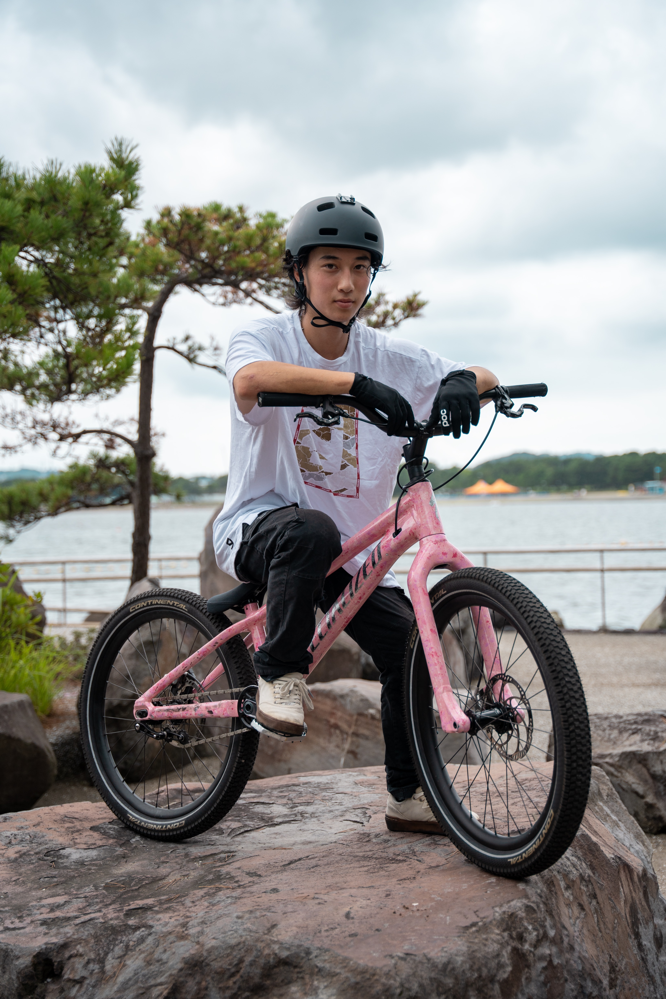

スポーツシーンだけでなく、カルチャー・ファッション・ライフスタイル・社会活動を牽引するアスリートが、ブランドのメッセージを届けます。
スポンサーシップ＝ロゴ露出で十分に効果を発揮してたマスメディアの全盛期。
しかしSNSとインターネットが普及した現在、情報は受け手が「選択」する時代。受け手のリテラシーも向上し、ロゴが映り込むだけでは強い印象を残せなくなりました。
いまスポンサーシップに求められているのは、ファンが能動的にブランドへ関与したくなる仕組み—スポンサーアクティベーションです。
「露出」をメインとした従来型のスポンサーシップの枠組みをこえ、
「事業課題の解決へと導くマーケティングソリューション」として成果を創出できるようご支援します。
パートナーシップ開始前後の定量・定性調査やアクティベーションの効果測定を実施。ブランド認知・好意度・購買意向への影響を可視化し、スポンサーシップの成果を明確にします。
アスリートの活動と連動した企画や、ウェルネスを活用したマーケティング施策の企画設計から実装までを包括的にご支援します。
アスリートを活かしたイベントやコンテンツを企画・制作。ウェルネス文脈を取り入れたイベントの企画・制作や、それぞれのプラットフォーム特性に合わせたSNSコンテンツを制作します。
岸勇希は、Specialized初のストリートトライアルライダーとしてグローバルアンバサダーに選出されました。14歳時に制作したYouTube動画「School Ride 1」は660万再生を記録したほか、SNSやテレビでの露出によりブランドシップを体現しています。
このパートナーシップはSpecializedの日本・アジア市場における若年層へのリーチを大きく拡大たケースとなりました。
